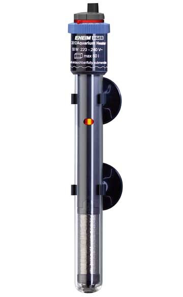

Readying your home for pet fish can vary in difficulty depending on how many
fish you'd like to keep as well as how much space you have available. Fish tanks can range in capacity
from just 0.5 gallons to over 200 gallons. As aquarium size increases, weight, maintenance difficulty,
and space requirements increase steeply. Before you buy, consider the benefits and drawbacks of all the
fish tank sizes and aquarium sizes available.
When shopping for an aquarium, look at the "Weights & Dimensions" tab for a
tank's exact L x W x H dimensions as well as its weight when empty and its water capacity. Tanks of the
same capacity aren't one-size-fits-all. They can vary in shape, so it's very important to look at the
exact dimensions to ensure you have enough space before you buy. Keep in mind that you'll need a few
inches above your aquarium for feeding purposes, maintenance, and accessories like tank hoods.
All aquariums must be placed on aquarium specific cabinets, and
manufacturer’s warranties may be void if a heavy aquarium full of water is supported by unsuitable
home furniture.
In the worst case the furniture underneath may collapse. Instead choose
the proper cabinet for your make and model of tank, which has been designed specifically to support
its weight.
Cabinets benefit aquariums in other ways too, as they offer a place out
of sight to place external power filters - the best filter option for a tropical or coldwater freshwater
tank, and also to place pots of food, test kits, and all those plugs and cables.
Water is heavy. Keep in mind water adds approximately 8lbs per gallon.
Therefore, as a guide a 10 gal tank weighs approximately 80 lbs and a 20 gal approximately 160lbs.
Then you have the weight of the tank itself and gravel on the bottom of the tank.
You can then choose a finishing style, to fit in with your decor. Some
people prefer one material like wood or steel, while others like a combination. A metal finish is
often preferred because of its modern look and it’s easy to clean. Steel is also rust coated, unlike
wood which will swell if it absorbs water and isn’t properly coated for protection.

If you live in the UK, a heater is an essential piece of kit in order to keep
tropical fish. Tropical fish come from tropical areas of the world like South America, South East Asia and
Africa, which are hot year round, and water temperatures typically don’t dip below 24 Celsius.
A heater has a thermostat combined, which can be set to 24 Celsius and will heat
and regulate that preset temperature day and night, year round, keeping your fish at tropical temperatures
they are more accustomed to.
Some advanced heaters display the temperature of the tank water, and if it is too
hot or cold, but every aquarium owner should also arm themselves with a thermometer, to offer at a glance,
temperature checking.
If you’re unsure which size heater you need, select a model which has the same
or more power in watts as there are litres of water in your aquarium.
So a 100 watt heater is needed for a 100 litre tank. A 200 watt heater for a
200 litre tank, and so on. If you have a 180 litre tank for example, you would select the next heater model
up, which is 200 watts, as heaters only come in a few sizes, and typically only up to 300 watts.
If you have a large, 500 litre aquarium, you will need two heaters - a 200 watt,
and a 300 watt.

 Neon tetra.
Neon tetra.
 Swordtail.
Swordtail.